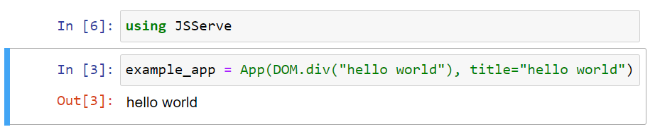
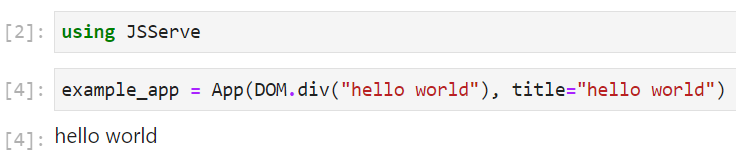

Deployment
using JSServe
example_app = App(DOM.div("hello world"), title="hello world")Server
# Depending on your servers setup, you may need to listen on another port or URL
# But 0.0.0.0:80 is pretty standard for most server setups
port = 80
url = "0.0.0.0"
server = JSServe.Server(example_app, url, port)Now, you should see the webpage at http://0.0.0.0:80.
Proxy + Julia Hub
If the server is behind a proxy, you can set the proxy like this:
server = JSServe.Server(example_app, "0.0.0.0", 8080; proxy_url="https://my-domain.de/my-app");
# or set it later
# this can be handy for interactive use cases where one isn't sure which port is open, and let JSServe find a free port (which will then be different from the one created with, but is stored in `server.port`)
server.proxy_url = ".../$(server.port)"".../8080"JSServe tries to do this for known environments like JuliaHub via get_server(). This will find the most common proxy setup and return a started server:
server = JSServe.get_server()
# add a route to the server for root to point to our example app
route!(server, "/" => example_app)The url which this site is now served on can be found via:
# Here in documenter, this will just return a localhost url
url_to_visit = online_url(server, "/")"http://localhost:9384/"Like this, one can also add multiple pages:
page_404 = App() do session, request
return DOM.div("no page for $(request.target)")
end
# You can use string (paths), or a regex
route!(server, r".*" => page_404)
route!(server, r"my/nested/page" => App(DOM.div("nested")))
url_to_visit = online_url(server, "/my/nested/page")"http://localhost:9384/my/nested/page"Heroku
Deploying to Heroku with JSServe works pretty similar to this blogpost.
mkdir my-app
cd my-app
julia --project=. -e 'using Pkg; Pkg.add("JSServe")' # and any other dependencythen create 2 files:
app.jl:
using JSServe
# The app you want to serve
# Note: you can also add more pages with `route!(server, ...)` as explained aboce
my_app = App(DOM.div("hello world"))
port = parse(Int, ENV["PORT"])
# needs to match `heroku create - a example-app`,
# which we can ensure by using the env variable
# which is only available in review app, so one needs to fill this in manually for now
# https://devcenter.heroku.com/articles/github-integration-review-apps#injected-environment-variables
my_app_name = get(ENV, "HEROKU_APP_NAME", "example-app")
url = "https://$(my_app_name).herokuapp.com/"
wait(JSServe.Server(my_app, "0.0.0.0", port, proxy_url=url))Procfile:
web: julia --project=. app.jland then to upload the app install the heroku-cli and run as explained in the heroku git deploy section:
$ cd my-app
$ git init
$ git add .
$ git commit -m "first commit"
$ heroku create -a example-app
$ heroku git:remote -a example-appWhich, after showing you the install logs, should print out the url to visit in the end. You can see the full example here:
https://github.com/SimonDanisch/JSServe-heroku
Terminal
If no HTML display is found in the Julia display stack, JSServe calls JSServe.enable_browser_display() in the __init__ function. This adds a display, that opens a browser window to display the app The loading of the BrowserDisplay happen in any kind of environment without html display, so this should also work in any kind of terminal or when evaluating a script.
> using JSSever
> example_app # just let the display system display it in a browser windowVScode
VScode with enabled Plot Pane will display any JSServe.App in the HTML plotpane:
Notebooks
Most common notebook systems should work out of the box.
IJulia

Jupyterlab

Pluto

Electron
using Electron, JSServe
# Needs to be called after loading Electron
JSServe.use_electron_display()
# display(...) can be skipped in e.g. VSCode with disabled plotpane
display(example_app)
Documenter
JSServe works in Documenter without additional setup. But, one always needs to include a block like this before any other code block displaying JSServe Apps:
using JSServe
Page()This is needed, since JSServe structures the dependencies and state per Page, which needs to be unique per documentation page. One can use the JSServe documentation source to see an example.
Static export
Anything else
JSServe overloads the display/show stack for the mime "text/html" so any other Software which is able to display html in Julia should work with JSServe. If a use case is not supported, please open an issue. One can also always directly call:
html_source = sprint(io-> show(io, MIME"text/html"(), example_app))Do get the html source code as a string (or just write it to the io).